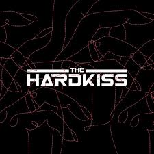
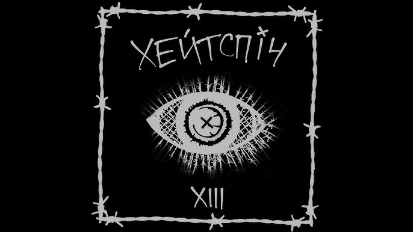
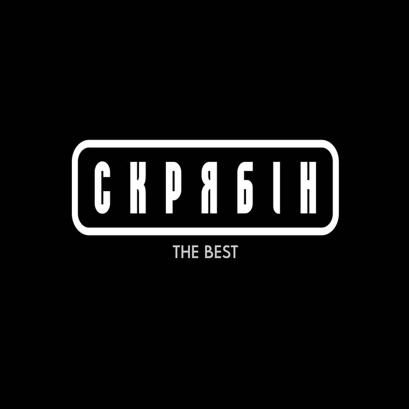

Long story short
Journeys with My parents
Some of my best memories are from the journeys I took with my parents. Whether it was a long drive to a quiet fishing spot, a hike up a mountain trail, or just a long journey in other countries, every trip felt special. We would talk about life, share laughs, and learning new ideas or skills together. These journeys taught me patience, the value of listening, and how to appreciate the beauty in everyday moments.
Boxing
Boxing has always been more than just a sport to me; it's a way to channel my energy, push my limits, and build discipline. I remember the first time I put on gloves and stepped into the ring—it was a mix of excitement and nerves. Since then, I`ve trained consistently, learning the value of perseverance and focus. Unfortunatly I retired from this sport due to trauma.
Science and learning
Studying has always required dedication and commitment, and I've always approached my education with purpose. I believe that knowledge empowers, and every lesson is an opportunity for growth. There were times when staying up late to understand a complex math theorem or work through a challenging physics problem seemed tough, but each breakthrough felt rewarding. I remember a biology project where I spent days researching genetics, fascinated by how every tiny cell holds the blueprint of life. Through these experiences, I learned that diligence pays off, and every challenge builds my confidence to explore new horizons in science and beyond.
| Date | Event | Remark (if needed) |
|---|---|---|
| 2003 | I was born | Only one child in family |
| 2009 | First class in school | School number 15 of Melitopol City |
| 2012 | Start of my boxing hobby | |
| 2014 | First science event | In-school Math competition |
| 2017 | Finish of middle School | |
| 2020 | Finish of high school. Start of KPI | National Technical University of Ukraine “Igor Sikorsky Kyiv Polytechnic Institute” |
| 2022 | Start of war. Emigration to Ireland | |
| 2024 | Start of Studying in SETU Waterford | South East Technological University |
| Logo | Band | Favorite songs | ||
|---|---|---|---|---|
| Boombox | Люди | Хоттабыч | ||
|  | The Hardkiss | Журавлі | ||
|  | Хейтспіч | Добровольці | Я вб'ю всіх богів | |
|  | Скрябін | Кольорова | Старі фотографії | Говорили і курили |